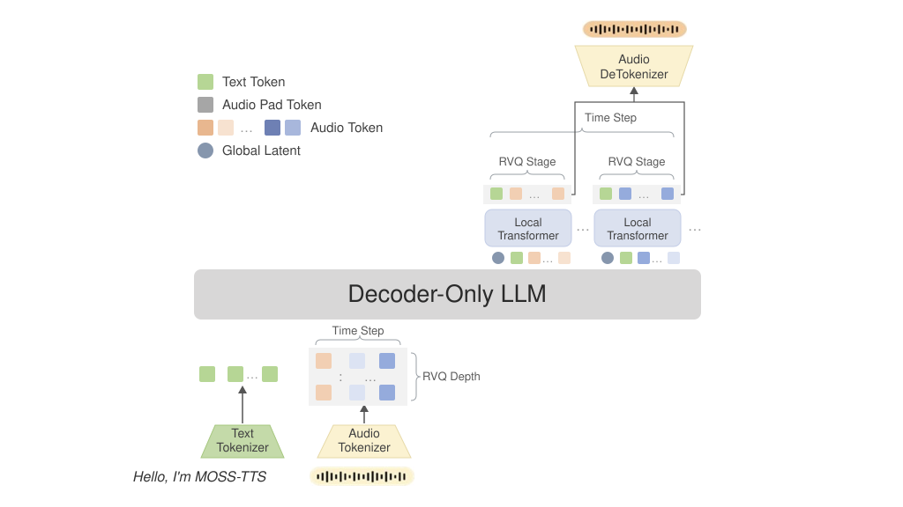
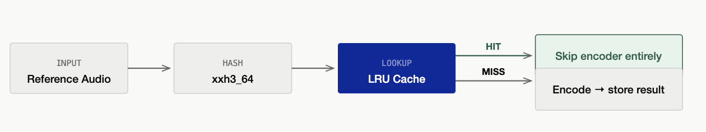
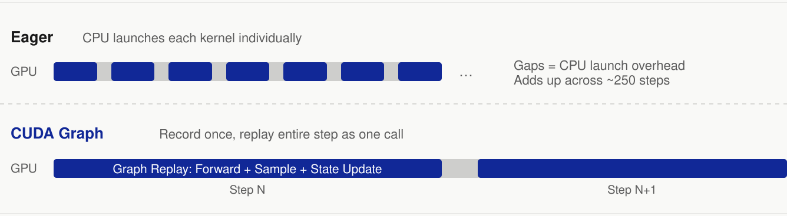

MOSS-TTS Local Transformer v1.5 on SGLang-Omni: Serving Native-Streaming 48 kHz Speech
MOSI, OpenMOSS Team & SGLang-Omni Team
We are releasing end-to-end serving support for MOSS-TTS-Local-Transformer-v1.5 on SGLang-Omni, together with MOSI and the OpenMOSS Team.
MOSS-TTS-Local-Transformer-v1.5 is an open TTS model for 48 kHz stereo speech, zero-shot voice cloning, long-form synthesis, multilingual generation, duration control, and native streaming. The model is not hard to call from a demo script. Serving it well is harder: one request crosses reference-audio encoding, a Qwen3-4B autoregressive backbone, a frame-local 12-codebook sampling loop, and a stateful codec decoder.
SGLang-Omni serves MOSS-TTS-Local-Transformer-v1.5 as a three-stage pipeline instead of squeezing it into a single LLM decode loop. The work in this post is mostly about that mapping: where the stages are, which parts needed model-specific hooks, and which bottlenecks showed up once the model started running under load.
The MOSS-TTS-Local-Transformer-v1.5 Model
MOSS-TTS-Local-Transformer-v1.5 is the second flagship model in the MOSS-TTS v1.5 family. It follows the Audio Tokenizer + LLM autoregressive route, with a heavier audio codec and a Global Transformer + Local Transformer generation path.
It supports direct TTS, continuation, zero-shot voice cloning, duration control, explicit pause markup such as [pause 3.2s], and long-form generation up to 10 minutes. It covers 31 major languages and was trained on roughly 4 million hours of multilingual speech.

At the audio boundary, MOSS uses MOSS-Audio-Tokenizer-v2, a neural audio tokenizer whose encoder and decoder together are about 2B parameters. It runs at 12.5 Hz, supports 0.125 kbps to 4 kbps variable bitrate compression, reconstructs 48 kHz stereo audio, and represents speech through residual vector quantization (RVQ).
The generation core uses a Qwen3-4B backbone. The global transformer advances the sequence frame by frame. For each frame, a one-layer local transformer emits a stop/continue decision and then samples 12 RVQ codebooks in order, feeding each sampled code back before sampling the next one.
The serving-visible token layout is [T, 13]: one text/control channel and 12 audio codebook channels. Text positions carry a text token in channel 0 and audio padding in the remaining channels. Audio positions carry a slot/control token in channel 0 and one RVQ code from each audio codebook. This is the first place where MOSS stops looking like a normal next-token model: every generated frame is a row, not a scalar token.
On public model-level evaluation sets:
| Benchmark | WER (lower is better) | SIM (higher is better) |
|---|---|---|
| Seed-TTS-Eval | 5.10% | 69.23% |
| CV3-Eval | 7.48% | 61.59% |
| MiniMax Multilingual | 6.37% | 75.31% |
| X Voice | 20.48% | 63.00% |
These are offline model metrics. The serving benchmarks later use a different evaluation pipeline and should be read as end-to-end system measurements.
MOSS-TTS-Local-Transformer-v1.5 was trained at thousand-card scale on Alibaba Cloud's PPU-ZW810 cluster. This post focuses on the serving side.
Why MOSS Needs a Multi-Stage Serving Runtime
A standard LLM serving engine is built around one repeated model loop. MOSS has three different kinds of work in one request:
- Preprocessing and reference encoding. Text is tokenized, reference audio is loaded, and the reference waveform is encoded into RVQ codes.
- Autoregressive TTS engine. The Qwen3 backbone and local transformer generate
[1, 13]frame rows. - Streaming vocoder. Generated RVQ rows are decoded by a stateful MOSS codec decoder into waveform chunks.
Each stage has a different bottleneck. Reference encoding runs a large neural codec encoder. AR generation mixes a normal backbone decode with a tiny but strictly sequential local codebook loop. The vocoder is a stateful decoder that must preserve streaming state across chunks. The system has to manage all three without letting one stage's batching or memory behavior damage the others.
Serving MOSS with SGLang-Omni
SGLang-Omni serves MOSS-TTS Local Transformer v1.5 as a three-stage pipeline:
preprocessing -> tts_engine -> vocoder
The preprocessing stage parses the OpenAI-compatible request, prepares the multi-channel prompt, and encodes reference audio for voice cloning. The tts_engine stage runs on OmniScheduler, so MOSS can reuse SGLang's request batching and KV-cache machinery while carrying model-specific [T, 13] rows. The vocoder stage consumes generated rows as a stream and returns audio chunks from a persistent codec streaming session.
The reused part is the runtime shape: stage lifecycle, scheduler interface, inter-stage routing, streaming outputs, process placement, and stage-level resource accounting. The MOSS-specific part is smaller and more explicit: how to build the multi-channel prompt, how to run the frame-local codebook loop, and how to connect the MOSS codec as a streaming decoder. The next section focuses only on those MOSS-specific bottlenecks and optimizations.
Optimizing MOSS End-to-End
Once the pipeline was functionally complete, we optimized the stages where profiling showed repeated work or launch overhead.
| Area | Change | Main Benefit | Source |
|---|---|---|---|
| Model serving baseline | MOSS Local model, pipeline, and API support | Establishes the three-stage serving path | #728 |
| Reference encoding | Batched encoding, content-addressed LRU cache, and single-flight deduplication | Avoids repeated codec encoder work for reused speakers | #748, #778, #788 |
| AR engine | Decode-state pool, frame CUDA Graph support, and GPU-native row hash | Keeps decode state at stable GPU addresses and removes per-frame host hashing | #745 |
| AR engine | Frame launch-state pooling and async decode plumbing | Reduces launch preparation overhead and fixes decode-step ownership issues | #759, #758 |
| AR engine | Compiled seeded sampler | Fuses the hot sampling path while preserving deterministic per-request sampling | #773 |
| Vocoder | Stateful streaming session, stream slots, and coalesced chunk scheduling | Enables frame-level audio streaming with request isolation | #753 |
| Vocoder | Stateful vocoder CUDA Graph | Speeds up short streaming decode steps | #798 |
| Cross-stage | Explicit colocated memory budgeting | Prevents codec and AR memory pressure from interfering with each other | #810 |
Reference Audio Encoding
Voice cloning often reuses the same speakers across many prompts. In MOSS, this matters because reference encoding runs a large codec encoder before AR generation can begin.

SGLang-Omni combines batched reference encoding with a content-addressed LRU cache. Repeated references are keyed by audio content rather than by path, so copied or renamed files still reuse the same encoded RVQ result. A single-flight path merges concurrent misses for the same speaker, preventing a cold-cache burst from launching duplicate codec encodes.
In SeedTTS English evaluation on 2x H100 at concurrency 16, increasing the reference cache capacity from 256 to 1024 entries improved throughput by 32.0% and reduced mean latency by 24.3%. The memory cost was small because encoded code tensors are compact; the larger cache mainly prevents eviction of the active speaker working set.
AR Engine
The MOSS AR engine has two levels of computation: the Qwen3 backbone and the local transformer frame-decode loop. SGLang-Omni captures both with CUDA Graphs, but keeps them separate because they have different structure and ownership.

The backbone graph uses SGLang's standard CUDA Graph path for causal LM decode. The MOSS-specific frame graph captures the local transformer micro-loop for a full frame: stop/continue sampling, 12 sequential codebook projections, codebook feedback, and feedback embedding assembly for the next frame. This removes launch overhead from a small but highly sequential loop.
To make graph replay possible, MOSS keeps per-request decode state in a persistent GPU-side pool. Feedback embeddings, sampling parameters, seeds, counters, and audio history live at stable addresses across frames. SGLang-Omni also moves the generated-row radix hash to the GPU, avoiding a per-frame CPU hash and D2H synchronization.
The 13 per-frame sampling operations use a seeded GPU sampler. We compile only this sampling path, not the backbone or local transformer. That narrow scope improved throughput by 12.3%, reduced mean latency by 11.1%, and reduced mean RTF by 10.5% on SeedTTS English at concurrency 16, without changing the larger model execution path.
Streaming Vocoder
The vocoder stage turns generated RVQ frames into audio chunks. Because MOSS-Audio-Tokenizer-v2 supports stateful streaming decode, SGLang-Omni keeps a persistent codec streaming session inside the vocoder executor.
The scheduler manages stream slots, an offline fallback slot, chunk thresholds, and coalesced decode steps. The first chunk can use a small threshold to reduce time to first audio, while later chunks use larger windows to improve throughput. When several requests have enough pending frames, the scheduler decodes them together in one codec call.
Short streaming chunks are launch-heavy, so SGLang-Omni captures common vocoder frame counts with CUDA Graphs. The implementation keeps codec state buffers at stable addresses and updates them in place, allowing graph replay across streaming steps.
The speedup is largest for short streaming chunks:
| Frames per Step | Eager | CUDA Graph | Speedup |
|---|---|---|---|
| 4 | 66.3 ms | 30.1 ms | 2.20x |
| 5 | 65.8 ms | 30.7 ms | 2.14x |
| 8 | 65.6 ms | 34.0 ms | 1.93x |
| 13 | 65.4 ms | 40.4 ms | 1.62x |
| 25 | 74.8 ms | 58.3 ms | 1.28x |
| 100 | 222.9 ms | 215.3 ms | 1.04x |
The graph path falls back to eager decode when a frame count is not captured or memory is tight. Streaming/non-streaming consistency checks cover the path.
Memory Budgeting
In the default MOSS Local config, preprocessing, AR generation, and vocoder execution can be colocated on one GPU. That compact layout is convenient, but the AR engine and codec runtime do not have the same allocation pattern. SGLang-Omni therefore gives the AR engine an explicit colocated memory contract and reserves headroom for codec runtime allocations and streaming state.
In a single-card colocated configuration at concurrency 8, explicit codec memory budgeting improved throughput by 8.9% and reduced mean RTF by 8.4%. More importantly, it makes deployment behavior predictable under memory pressure.
Performance
We evaluate the optimized serving path on the SeedTTS English set with 1088 samples. The results below come from the full CI evaluation after vocoder CUDA Graph was enabled, using 2x GPU and client concurrency 16. ASR scoring uses Qwen3-ASR-1.7B, and speaker similarity uses WavLM-Large finetune.
| Mode | Completed / Failed | Throughput | Audio Throughput | Mean Latency | Mean RTF | WER |
|---|---|---|---|---|---|---|
| Non-streaming | 1088 / 0 | 5.976 req/s | 26.303 audio s/s | 2.669 s | 0.644 | 1.75% |
| Streaming | 1088 / 0 | 2.909 req/s | 12.804 audio s/s | 5.474 s | 1.322 | 2.14% |
Non-streaming reaches 5.976 req/s with mean RTF 0.644. Streaming emits incremental audio chunks; at concurrency 16, the average inter-chunk interval is 0.109 s, and each request emits 8.82 chunks on average. The lower streaming throughput is expected: the vocoder runs more often on smaller chunks and shares GPU time with the AR engine.
The quality numbers stay close across modes: 1.75% WER for non-streaming and 2.14% for streaming in the same CI run. Streaming/non-streaming artifact consistency checks also pass.
The individual optimization measurements should not be added into one headline number because they were collected under different hardware and concurrency settings. They are more useful as a map of where MOSS spends time: reference caching removes redundant encoder work, frame CUDA Graphs remove local-loop launch overhead, sampler compilation improves a hot sampling path, vocoder CUDA Graphs accelerate short streaming chunks, and memory budgeting stabilizes colocated deployment.
Try It Yourself
The SGLang-Omni MOSS-TTS-Local cookbook has the full setup, API options, and streaming examples. The minimal path is:
Install and Serve
docker pull lmsysorg/sglang-omni:dev
docker run -it --gpus all --shm-size 32g --ipc host --network host --privileged \
lmsysorg/sglang-omni:dev /bin/zsh
git clone git@github.com:sgl-project/sglang-omni.git
cd sglang-omni
uv venv .venv -p 3.12
source .venv/bin/activate
uv pip install -v -e .
hf download OpenMOSS-Team/MOSS-TTS-Local-Transformer-v1.5
sgl-omni serve \
--model-path OpenMOSS-Team/MOSS-TTS-Local-Transformer-v1.5 \
--port 8000
The default layout colocates the AR backbone and codec/vocoder on one GPU. An explicit config is available at examples/configs/moss_tts_local.yaml.
After the server starts, a basic synthesis request returns a WAV file:
curl -X POST http://localhost:8000/v1/audio/speech \
-H "Content-Type: application/json" \
-d '{"input": "SGLang-Omni is a great project for high-fidelity speech generation."}' \
--output output.wav
For voice cloning, streaming PCM, duration control, pause markup, pronunciation hints, language hints, sampling parameters, and benchmark commands, see the cookbook.
Roadmap
The current path works end to end, but several parts are still worth improving:
Pool-native frame CUDA Graph. The current frame-decode graph uses persistent state pools, but some staging remains around sampling parameters and generated rows. A more native pool-to-pool graph path can simplify the launch/resolve boundary.
Adaptive streaming scheduling. Streaming TTS has a real latency-throughput trade-off. We are exploring load-aware chunk sizing, priority-aware slot scheduling, and better coalescing policies so low-load requests receive fast first audio while high-load deployments recover more throughput.
Broader compilation coverage. The codec encoder and Qwen3 backbone still have room for targeted compilation experiments. We will keep the compile scope narrow enough to avoid cold-start regressions and output changes.
Wider benchmark coverage. Current measurements focus on SeedTTS English in CI. We plan to expand coverage to Chinese, multilingual evaluation, long-form generation, multiple speaker pools, different reference lengths, and production-like traffic mixes.
Join Us
SGLang Omni is burgeoning. If you are interested in TTS, omni models, streaming inference, CUDA Graphs, scheduling, communication, model onboarding, benchmarking, or production serving, contributions and discussions are welcome.
Acknowledgments
SGLang-Omni - Jiaxin Deng, Haoguang Cai, Shangming Cai, Qiujiang Chen, Yuhao Chen, Wenyao Gao, Yifei Gao, Jingwen Gu, Yitong Guan, Zhihao Guo, Chenchen Hong, Hao Jin, Xinli Jing, Xiangrui Ke, Shenggui Li, Junrong Lin, Estella Liu, Xinyu Lu, Yuan Luo, Ratish Palanisamy, Mick Qian, JinTao Qu, Shuai Shi, Yijiang Tian, Chao Wang, ichard Wang, Shuwen Wang, Zijie Xia, Yuhao Yang, Xuesong Ye, Fan Yin, Yue Yin, Gaokai Zhang, Xiaoyu Zhang, Chenyang Zhao, Yichi Zhang.
MOSS-TTS Local Transformer v1.5 - Yitian Gong, Kuangwei Chen, Zhicheng Zhang, Botian Jiang, Yiyang Zhang, Kang Yu, Yang Gao, Xiaogui Yang, Qinyuan Chen, Zhaoye Fei, Shimin Li, Xipeng Qiu.
Learn More
- Model: OpenMOSS-Team/MOSS-TTS-Local-Transformer-v1.5
- Serving framework: SGLang-Omni on GitHub
- Documentation: SGLang-Omni docs
- MOSS-TTS-Local cookbook: MOSS-TTS-Local in SGLang-Omni
- MOSS optimization roadmap: #637
- Design background: SGLang-Omni: Redesigning the Inference Framework for Multi-Stage Generative Models